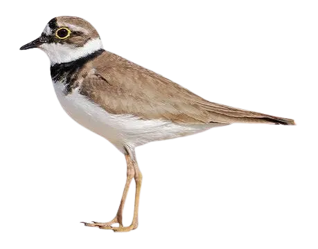

Animal Grimoire
 Plovers
Plovers
The plover is a resilient shorebird and grassland wanderer celebrated for its extraordinary migratory endurance and its fierce, clever defense of its young. It carries associations with preparation, long-range planning, and the discipline of attending to what is directly in front of you.
Physical Description
The American golden plover is a medium-sized shorebird measuring approximately 10 inches in length, with a wingspan of 22 inches and a weight of about 5.5 ounces. Its back is speckled gold and brown, while the chest and belly are black, and the rump is white. The face is black with a clean white border, and both the bill and legs are black. Its eyesight is exceptionally sharp, capable of spotting tiny insects along the ground while foraging.
Habitat and Distribution
Plovers are found across central and eastern Canada, including Arctic breeding grounds, as well as the United States, Mexico, Central America, and South America. The golden plover in particular occupies a wide range of open environments: prairies, mudflats, tundra, beaches, and similar exposed terrain. It is generally considered a shorebird, though its grassland presence sets it apart from strictly coastal species.
Behavior
The plover forages in a distinctive start-and-stop pattern, running a short distance, pausing, then running again, scanning the ground between bursts of movement. When a predator threatens its nest or chicks, the plover employs a well-known distraction display: it runs away from the nest while feigning injury, dragging a wing and calling loudly to draw the threat away from its young. The golden plover undertakes one of the longest migratory routes of any shorebird, traveling from northern Canada and Alaska to southern South America, much of the journey conducted over open ocean where it cannot land to rest, eat, or drink.
Mythology and Folklore
In medieval European tradition, golden plovers were said to carry the souls of those who participated in the Crucifixion and were therefore condemned to wander without rest. This belief likely drew on the bird's relentless migratory movement and its restless start-and-stop behavior.
English folk tradition held that a group of seven plovers seen together was an omen of misfortune, and that hearing a plover call in the morning meant someone in your life would soon die. Sighting a plover was also read as a sign of approaching rain.
In Hawaiian mythology, the golden plover is identified as a form taken by Kumukahi, a figure associated with the deity Pele. Kumukahi was a healer believed to grant the ability to perform miracles. In Iceland, the golden plover's arrival is a traditional herald of summer.
Omens and Divinatory Meaning
The plover's migratory route is one of the most demanding undertaken by any bird, and it succeeds only through precise preparation and exceptional endurance. Its appearance can prompt reflection on whether you are planning far enough ahead or relying too heavily on improvisation when a longer view would serve you better.
The plover's foraging style carries a second lesson: methodical, focused attention to what is immediately before you rather than scattered, unfocused motion. It does not wander. It covers its ground thoroughly before moving on. This is its message about work, decision-making, and progress: commit to the task at hand, use your eyes well, and advance deliberately.
Colors
Black, white, brown, yellow